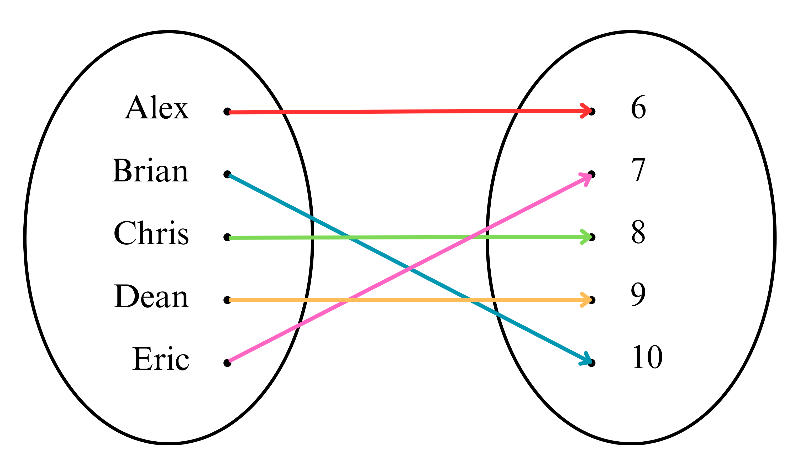
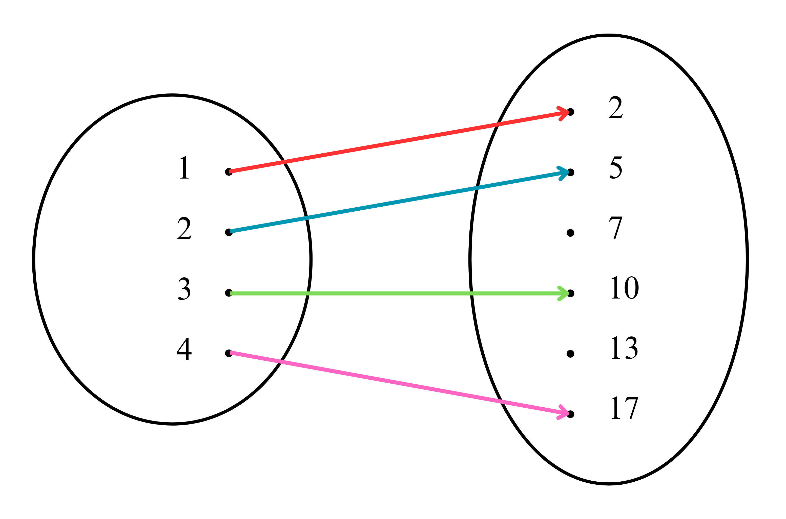
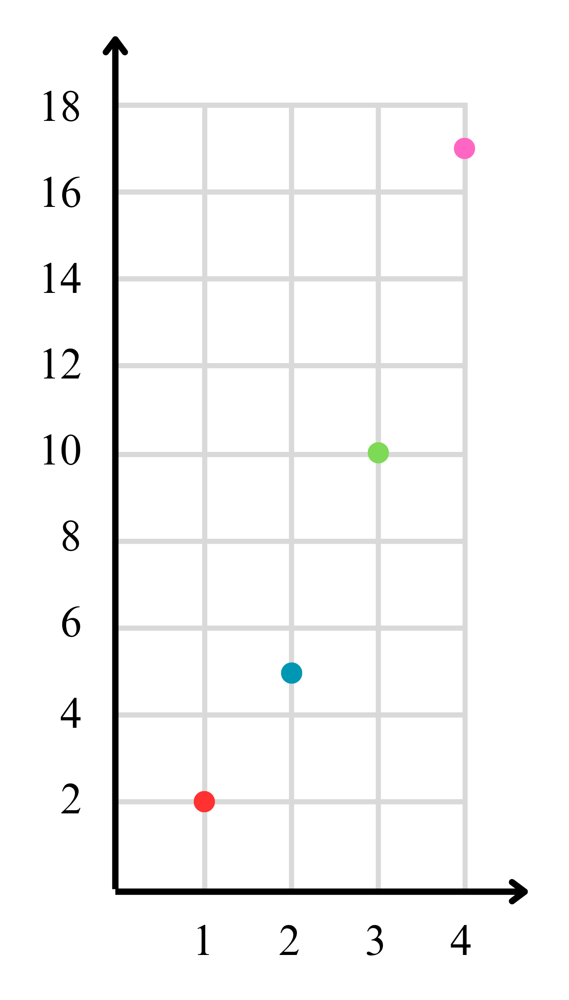
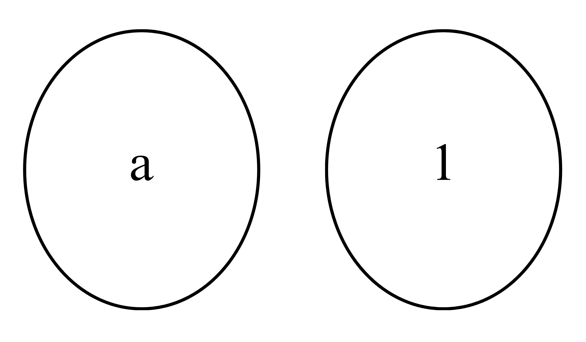
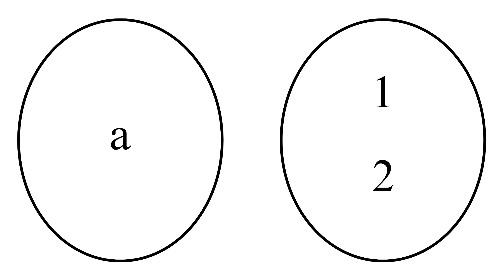
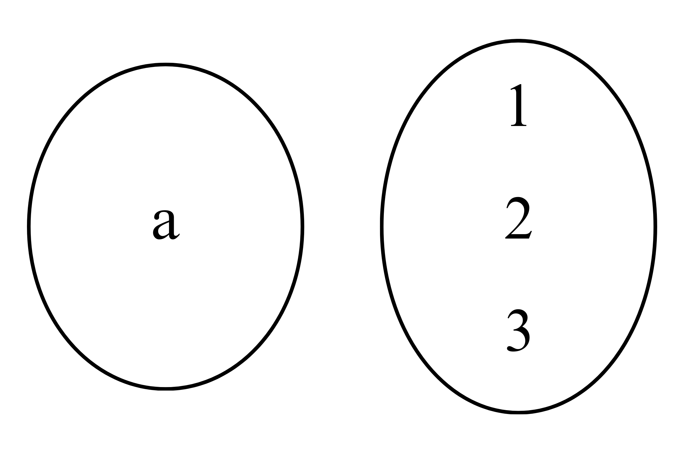
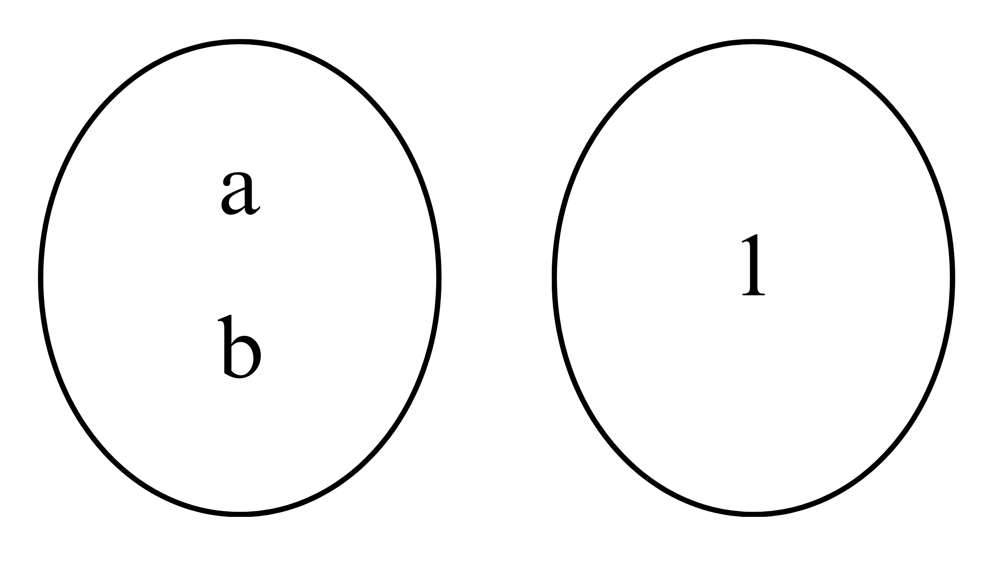
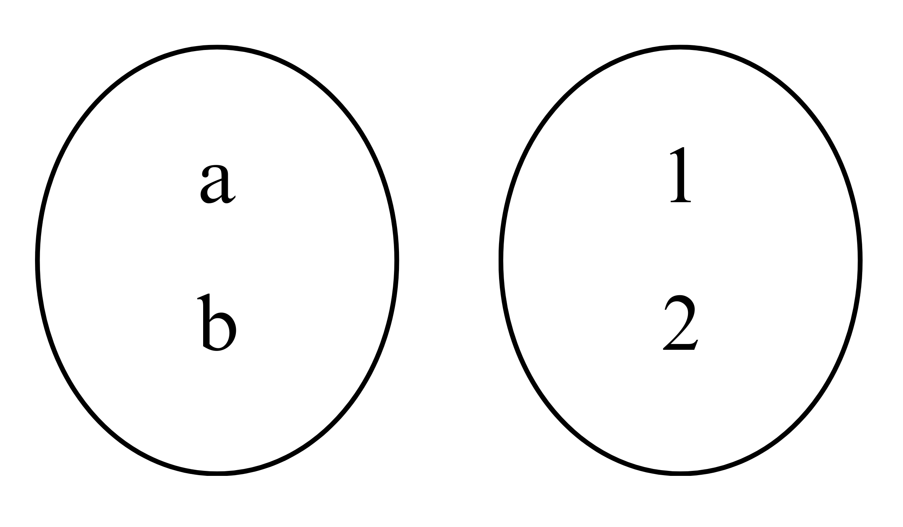

Fungsi adalah suatu aturan relasi atau korespondensi yang menghubungkan setiap objek 𝑥
dalam satu himpunan (domain), dengan sebuah nilai tunggal 𝑓(𝑥) dari suatu himpunan kedua
(kodomain). Fungsi dari himpunan A ke himpunan B dinotasikan dengan 𝑓: 𝐴 → 𝐵 ( 𝑓
memetakan anggota himpunan A ke anggota himpunan B). Jika 𝑓 sebuah fungsi dari himpunan
A ke himpunan B dengan 𝑥 ∈ 𝐴 dan 𝑦 ∈ 𝐵 maka peta 𝑥 oleh 𝑓 adalah 𝑦 yang dinyatakan
dengan 𝑓(𝑥). Dengan demikian, diperoleh rumus fungsi sebagai berikut.
𝑓𝑥 → 𝑦 𝑎𝑡𝑎𝑢 𝑓: 𝑥 → 𝑔(𝑥)
Misalnya, relasi nilai ulangan matematika 5 siswa kelas VIII seperti pada diagram panah di
bawah ini.

Pada relasi tersebut terlihat bahwa setiap anggota himpunan A mempunyai pasangan tepat satu
pada himpunan B. Sehingga, relasi antara himpunan A dan himpunan B ini dikenal sebagai
pemetaan atau fungsi.
Pada diagram panah tersebut himpunan A = {Alex, Brian, Chris, Dean, Eric} disebut sebagai
domain. Himpunan B = {6,7,8,9,10} disebut kodomain. Himpunan {6,7,8,9,10} yang
merupakan pasangan anggota daerah asal disebut range (daerah asal).
Selain contoh di atas, masih banyak contoh fungsi yang dapat memberikan kalian pemahaman
yang lebih mengenai fungsi. Salah satunya,
𝐴 = {(1, 1), (2, 4), (3, 6), (4, 7), (5, 8)}
𝐵 = {(1, 6), (2, 7), (2, 8), (3, 9), (4, 10)}
Berdasarkan, definisi dari himpunan A merupakan fungsi, sedangkan himpunan B bukan
merupakan fungsi. Hal ini dikarenakan setiap domain himpunan A memasangkan tepat satu
dengan sebuah nilai tunggal di kodomain. Namun, hal yang berbeda untuk satu nilai domain
pada himpunan 𝐵 yang mempunyai dua anggota di kodomain. Sehingga himpunan B tidak
sesuai dengan definisi fungsi.
Fungsi sangat penting karena relasi memberikan pemahaman tentang koneksi dan keterkaitan antara elemen dalam himpunan. Sementara fungsi, memberikan struktur yang terorganisir untuk memodelkan dan menganalisis hubungan matematis.
Mari kita ketahui apa saja ciri-ciri fungsi:
• Himpunan A dan himpunan B bukan himpunan kosong.
Himpunan kosong adalah himpunan yang tidak memiliki anggota apa pun, dan sering
dilambangkan dengan { }. Misalnya, himpunan A adalah himpunan bilangan prima antara
20 dan 30. Sebab, tidak memiliki anggota karena tidak ada bilangan prima di dalam rentang
tersebut, sehingga dapat dituliskan menjadi himpunan A = { }.
• Pasangan setiap anggota himpunan A tidak boleh lebih dari satu.
Misalnya, relasi 𝑆 = {(1,2), (2,3), (1,3)} bukanlah sebuah fungsi, karena tidak memenuhi
aturan tersebut karena anggota himpunan A yaitu 1 memiliki 2 pasangan kodomain. Jadi,
setiap anggota dari domain hanya dapat dipasangkan dengan satu anggota lainnya, dan
tidak boleh ada pasangan duplikat.
• Setiap anggota himpunan A harus mempunyai pasangan di himpunan B.
Misalnya, jika kita memiliki himpunan A = {1,2,3} dan himpunan B = {a,b,c} dan memiliki
fungsi 𝑓 = {(1, 𝑎), (2, 𝑏), (3, 𝑐)}. Jadi, setiap anggota himpunan A memiliki satu pasangan
di himpunan B.
• Anggota himpunan B boleh tidak mempunyai pasangan di A atau mempunyai pasangan lebih dari satu.
Misalnya, relasi dari himpunan A = {1,2,3} ke himpunan B = {a,b,c} adalah 𝑆 = {(1, 𝑎), (2, 𝑎), (3, 𝑐)}
Cara penyajian fungsi seperti cara penyajian relasi. Suatu fungsi dapat disajikan dalam bentuk
diagram panah, diagram kartesius, dan himpunan pasangan terurut.
Misalkan A = {1,2,3,4} dan B = {2,5,7,10,13,17}. Jika fungsi 𝑓 dari A ke B adalah 𝑓: 𝑥 → 𝑥2 +
+1, 𝑥 ∈ 𝑃, nyatakan fungsi 𝑓 dalam:
a. Diagram panah
b. Diagram kartesius
c. Himpunan pasangan berurutan
Penyelesaian:
𝑓: 𝑥 → 𝑥2 + 1
Daerah asal = {1,2,3,4}
𝑓(1) = 12 + 1 = 2; 𝑓(2) = 22 + 1 = 5; 𝑓(3) = 32 + 1 = 10; 𝑓(4) = 42 + 1 = 17
Daerah hasil = {2,5,10,17}
a. Diagram panah

b. Diagram kartesius

c. Himpunan pasangan berurutan
Himpunan pasangan terurut dari fungsi 𝑓 = {(1,2), (2,5), (3,10), (4,17)}
Banyaknya pemetaan atau fungsi dari dua buah himpunan ini dapat ditentukan. Berikut ini
bagaimana cara menentukan banyaknya sebuah fungsi.
Misal himpunan A = {a} dan B = {1}, banyaknya pemetaan dari A ke B adalah 1.

Misal himpunan A = {a} dan B = {1,2}, banyaknya pemetaan dari A ke B adalah 2.

Misal himpunan A = {a} dan B = {1,2,3}, banyaknya pemetaan dari A ke B adalah 3.

Misal himpunan A = {a,b} dan B = {1}, banyaknya pemetaan dari A ke B adalah 1.

Misal himpunan A = {a,b} dan B = {1,2}, banyaknya pemetaan dari A ke B adalah 4.

Jika hasil tersebut dimasukkan dalam tabel, maka diperoleh hasil berikut ini!
| Banyaknya himpunan A | Banyaknya himpunan B | Banyaknya pemetaan yang mungkin dari A ke B |
| 1 | 1 | 1 = 1^1 |
| 1 | 2 | 2 = 2^1 |
| 1 | 3 | 3 = 3^1 |
| 2 | 1 | 1 = 1^2 |
| 2 | 2 | 4 = 2^2 |
| ... | ... | ... |
| m | n | n^m |
Setiap nilai yang berada dalam daerah asal jika dimasukkan ke dalam sebuah fungsi 𝑓 maka
akan diperoleh nilai fungsi yang merupakan daerah hasilnya. Perhatikan contoh berikut ini!
Sebuah fungsi 𝑓 dari himpunan A ke B adalah sebagai berikut!
𝑓(𝑥) = −2𝑥 + 5, 𝑥 ∈ 𝐴 . Jika 𝐴 = {−2, −1,0,1,2} . Tentukanlah nilai-nilai fungsi, tabel, dan
juga grafik!
Penyelesaian:
• 𝑓(−2) = −2(−2) + 5 = 4 + 5 = 9
• 𝑓(−1) = −2(−1) + 5 = 2 + 5 = 7
• 𝑓(0) = −2(0) + 5 = 0 + 5 = 5
• 𝑓(1) = −2(1) + 5 = −2 + 5 = 3
• 𝑓(2) = −2(2) + 5 = −4 + 5 = 1
Maka tabel fungsinya sebagai berikut.
| 𝑥 | -2 | -1 | 0 | 1 | 2 |
| 𝑓(𝑥) | 9 | 7 | 5 | 3 | 1 |